Sölden
Hoger, kouder, sneeuwzekerder. Na Saalbach gaat de geng de Ötztal in: twee gletsjers, 144 km piste, een huisje met sauna en een ontbijtplan van acht pagina's. Deze keer met alle pezen intact.
tot vertrek op donderdag 4 februari 2027, zo vroeg mogelijk
- Waar
- Sölden, Ötztal, Tirol
- Wanneer
- Do 4 t/m ma 8 februari, 4 nachten
- Slapen
- Chalet met sauna in Heiligkreuz, geboekt
- Wie
- Vijf man. Jorg in 2028.
Nieuw in de groepsappsinds 7 oktober
- Stijn heeft een ontbijtplan gemaakt. Vier ochtenden, 36 eieren, elke dag ook glutenvrij.
- Waarschijnlijk gaan we met één busje in plaats van twee auto's.
- Stijn betaalde op 24 oktober termijn 2. De pot is voor 88% gevuld.
- Skihal-poll: dinsdag 8 december wint. Plus het skipak-dossier.
De geng
Vijf vaste man, een huisje voor zes en een reservebank. De vorige versie van deze pagina had Danny op ski's gezet. Danny: Dat is een AI-hallucinatie.
Gaat niet skiën en gaat niet filmen, zegt hij. Geeft iedereen onbeperkt recht op jägermeister, mits die in eigen lichaam verdwijnt
.
Vond het busje. Doet de eitjes. Gaat eerst bochtjes oefenen, niet masteren: Dat gaat nog jaren duren.
Wilde hoger en krijgt 3.250 meter. Elke ochtend een eigen pan: het ontbijtplan is Igor-proof.
Boekte het huisje en schoot het voor. Dit jaar met tand en achillespees. Stijn wil dat hij in de bus elk uur een wardrobe change
kan doen.
Chef, funpark, editor van de hype-video. Doel voor deze vakantie: hangtime
. Nee joh, gewoon allemaal snowboarden.
Slaat 2027 over. Ik was graag mee gegaan heren. Volgend jaar ben ik erbij.
Kan niet in 2027, wil wel mee naar de hal. Verliet de app omdat hij een beetje verdrietig
werd van alle voorpret.
Thomas houdt van 35 graden en is dus onwaarschijnlijk, maar de slee staat klaar.
Het eisenpakket
Iedereen had één eis. Links wat er gevraagd werd, rechts wat Sölden terugdoet.
Betere sneeuw. Bij de liften in het dorp was het in Saalbach snel pap.
Ik wil gewoon een funpark. Al ligt er mos.
En dit keer níet op de eerste dag.
Brede blauwe pistes (fijn voor boarden), niet te ver rijden en goed duur
.
Zolang jullie het maar eens worden.
Als het maar goed skiën is en geen methadonkliniek.
De afvallers
Wat er in de groepsapp voorbijkwam voordat het Sölden werd. Klik voor groot.
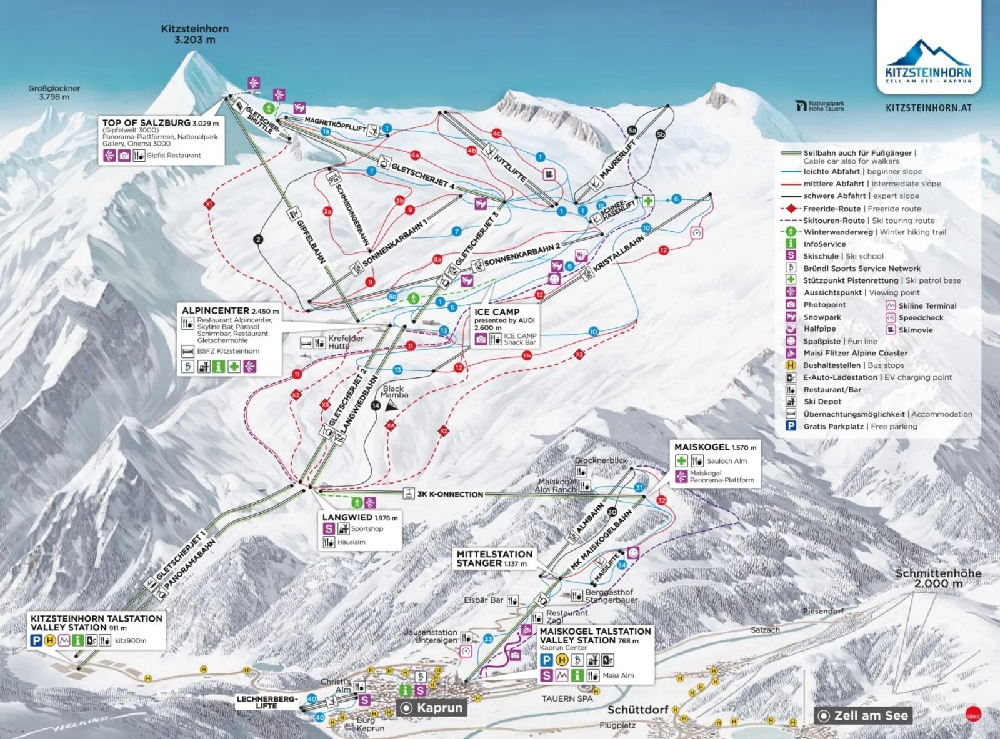
Ik heb iets gevonden waardoor we wél naar Kaprun moeten gaan.Pascal:
Kaprun ben ik vaak geweest. Alleen ligt het best laag, je moet dan de Kitzsteinhorn op.
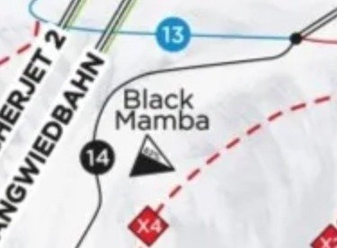
Haha.Daan:
Lfg.
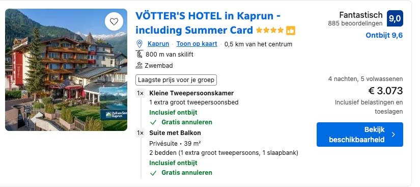
3000 ekkies met zwembad, sauna, ontbijt en parkeren.Daan:
Ja maar een huisje is ook wel top.Stijn:
Oke oke.
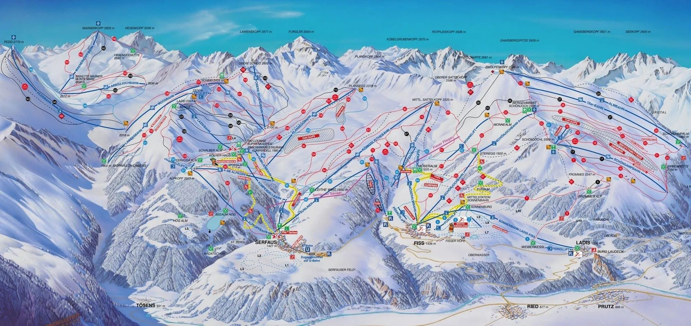
Veel blauwe en rode brede pistes.Danny:
Al die blauwe routes zitten onder 2000 meter.
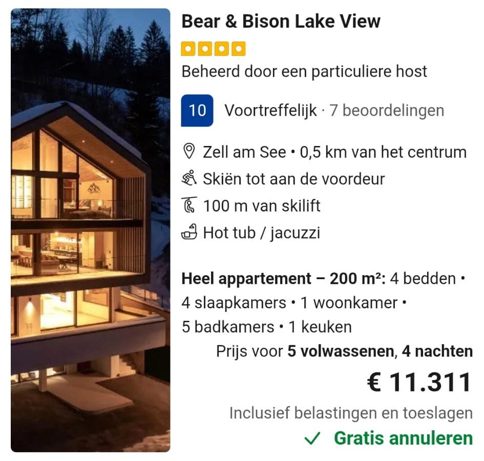
wel een eind lopen naar de lift. Danny, zeven minuten later:
Fixed.Bear & Bison Lake View, 100 m van de lift, hot tub, €11.311.
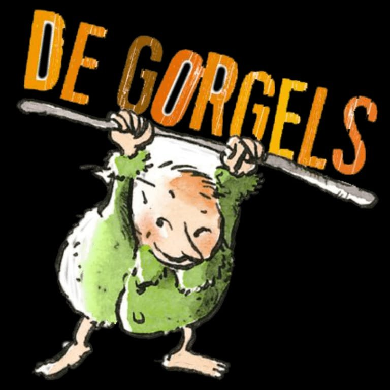
Obergurgl-Hochgurgl.Igor antwoordt met een plaatje. Later:
Gurgl klinkt al als gorgelen, perfect.
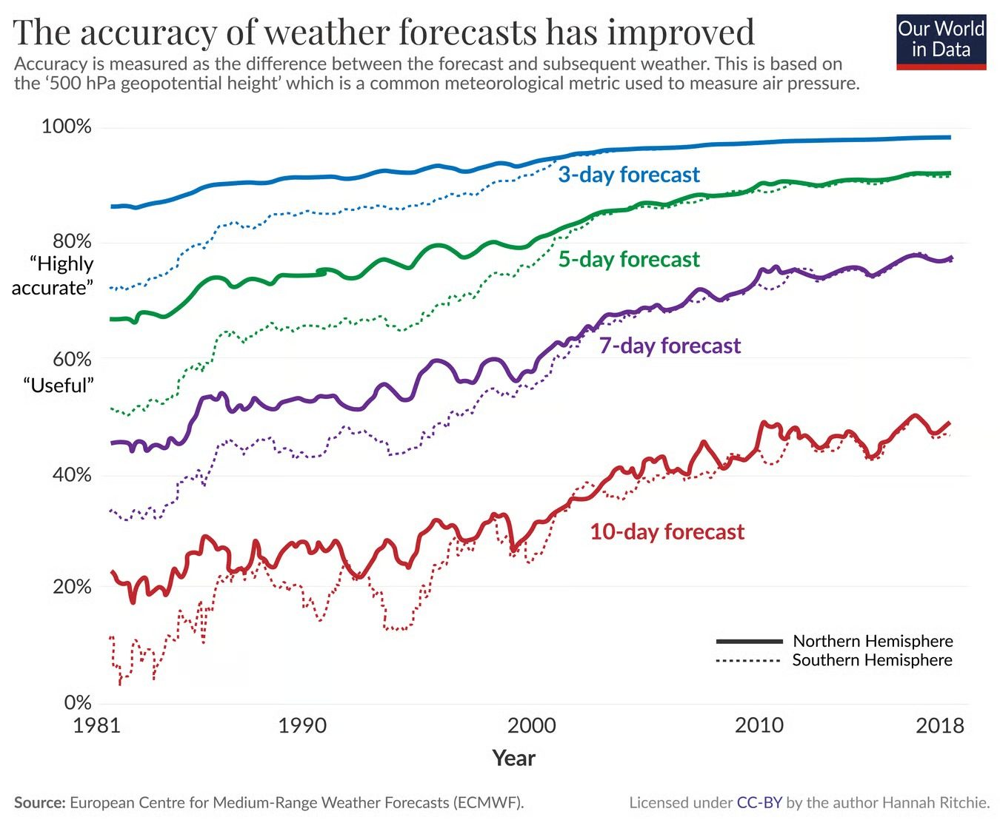
Ze kunnen het weer voor morgen nog niet eens accuraat voorspellen.Danny, met grafiek:
Jammer dat er geen 160-dagenlijntje bij staat. Maar ik durf te zeggen dat het < 10% is.Pascal:
Hebben we quantum computers voor nodig.
Het gebied
Ötztal, Tirol. Danny's filter hield Sölden en Gurgl over; Pascal koos Sölden. Dit is wat je daarvoor krijgt.
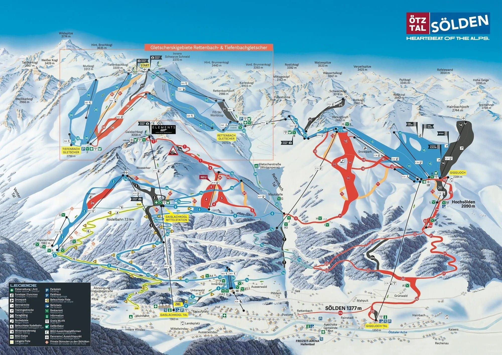
Het hangtime-protocol
Stijn deelde op 18 oktober een video van Area 47: hyped as fuck
. Daan: Dit ziet er uit als een perfect parkje. Op video lijkt het doable.
Het plan, in Stijns woorden:
- Geen gekke trucjes.
Gewoon mini hangtime.
- De eerste tien keer niet springen.
- Laatste dag:
hoppa
.
Pascal:Dan moet je eigenlijk naar zo'n turnzaal met een foam pit en dan een deckje meenemen zonder wielen.
Verder in het dal
Twee gletsjers, drie toppen boven de 3.000 meter en een dorp op 1.350 meter. Wie boven de Giggijoch blijft, zit de hele dag op 2.000+.
Op de Gaislachkogl (3.058 m) zit 007 Elements, het James Bond-museum. Stijn is er al geweest, dus dat slaan we over. Zegt Stijn.
Een oud-collega van Daan zit dezelfde week in Sölden, met een hele groep vrienden. Daan: Dat wordt wat.
Lessen van Saalbach
Wintersport 2026 was een topweek. Dit nemen we mee.
- Boek het aantal nachten dat je ook echt blijft. Het appartement stond voor drie nachten, de trip duurde vier. Danny:
Ik maak die fout niet nog eens.
- Alle snurkers in de woonkamer. Daan ronkte al voordat hij sliep; Igor wilde in de badkamer slapen. Stijn is verrassend genoeg een hele stille slaper.
- Eerste dag niet tot het gaatje.
En meer koffiepauzes.
Stijn, na een week spierpijn. - Materiaal online huren. Ter plekke is duurder, ontdekte Igor op dag één. Dit jaar vooraf regelen.
- Stijn maakt het ontbijt. Zijn brekkie was Daans top-2 moment van de hele vakantie. Inmiddels is het een plan van acht pagina's.
- Zwembad op de laatste dag: zalig. Dit jaar is het een sauna; Stijn neemt toch een zwembroek mee.
- Tand en achillespees thuislaten. Pascal verloor op dag één een tand en scheurde op dag drie zijn achillespees, en skiede door. Sindsdien heet hij Toothless Tony.
- Live locatie delen.
Pascal is kwijt.
Ik zit achter jou.
Iedereen z'n eigen journey, maar wel met locatie aan. - Geen laptop mee. Stijn tegen Pascal:
Zal fijn zijn dat je je gewoon bij de groep houdt.
Glasvezel-wifi of niet.
De voorpret
Danny, 13 oktober: Accommodatie betaald, auto deels geregeld, winter(sport)jas momenteel aan. Komt gevaarlijk dichtbij zo.
Eerst de skihal
Stijn zette op 20 oktober een poll uit voor een avond indoor oefenen, op maandag of dinsdag omdat het dan rustig is
(Danny). Pascal: We moeten juist maximale chaos simuleren.
Dinsdag 8 december wint met vijf stemmen; Stijn stelde voor die in te plannen. De laatste twee data vallen in de kerstvakantie. Daan kan op dinsdag niet rijden, Danny en Stijn wel.
Welke hal
- SnowWorld LandgraafvoorkeurDanny:
Die was master.
Stijn:In Nederland heeft alleen SnowWorld Landgraaf een echte stoeltjeslift.
Hij wil zitten, niet hangen. - ZoetermeerafgevallenDaans idee, inclusief zo'n liftje. Danny:
Dan heeft Daan dus tegen ons gelogen.
Straf: mee het funpark in. - Wijchen€36Vanaf 16 jaar, inclusief snowboard en schoenen. Stijn:
We kunnen ook een keertje op ons muil gaan in Wijchen.
- Terneuzen2,5 uurStijn, 1 oktober:
2,5 uur rijden.
Niet dus.
Het skipak-dossier
Stijn wil een skipak dat ik voor jullie allen zichtbaar ben
. Danny: Die dan gecombineerd met Toothless Tony. Wordt erg mooi.
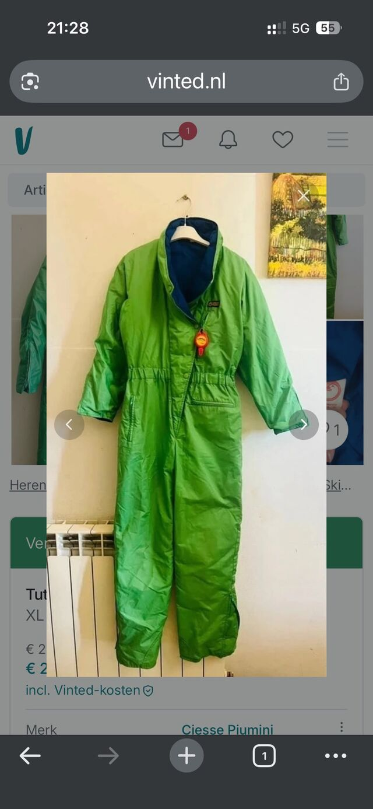
Letsgo.Danny:
Ja dit is echt perfectie. Heel ziek kleurtje.
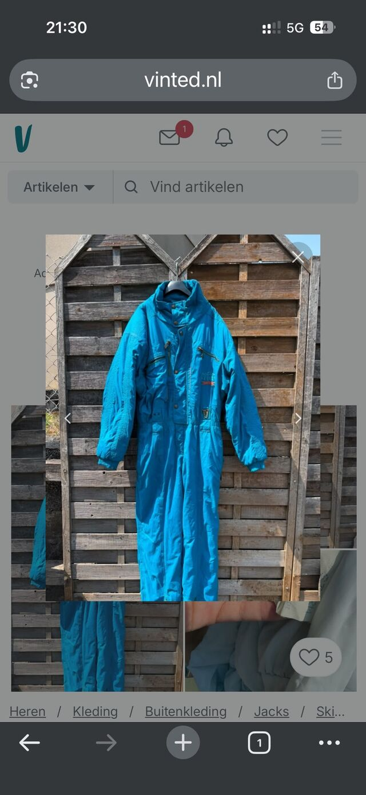
Ik heb er 2, kan ik een wardrobe change doen als er 1 nat is.
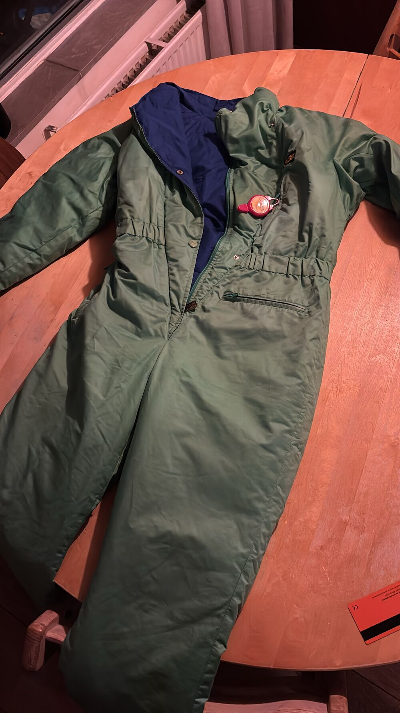
Kut zooi, XL pas ik ook al niet. Vrouwen-XL ofzo.Danny:
Kut kleine Italianen vroeger.Een dag eerder:
Niks komt aan. Kut Vinted.
De hype-edit
Op 20 oktober gooide Stijn de beelden van Saalbach terug in de app (een paar staan hieronder bij het eten). Pascal: Leuk dat ik toch nog m'n eigen skitrip kan ervaren via jullie beelden.
Stijn maakt er een hype-video van. Danny: Gewoon AI laten doen.
Stijn: Hij weet niet de key moments. Nee, ik doe het wel gewoon zelf. Maar wel onder werktijd.
De weg ernaartoe
Eerst was het zes uur met Daan achter het stuur
(Pascal) of negen uur
(Stijn). Sinds 16 oktober het plan: één busje, iedereen ruim, een kist met eten erin.
Een busje huren
het planDaan liet op 16 oktober een VW Caravelle zien: €64 per dag. Danny: Afgerond nul. Per persoon zeker. Heeft zelfs mijn voorkeur.
Stijn op 24 oktober: Kan alles in, iedereen ruim zitten.
Pascal: Ja perfect.
Nog niet geboekt.
Daans auto
reserveHad Daan in willen zetten. All-season banden.
Stijns Renault
liever nietStijn: Zal mijn Renault zoiets aankunnen?
Danny: Haha liever niet. Eerst maar eens een jaar geen garage gezien hebben.
Snelle rekensom: 5 dagen × €64 = €320, dus €64 per persoon voor het busje, zonder brandstof en tol.
Heen
Zo vroeg mogelijk; Daan: Wmb wel.
Stijn kan ook al in de nacht van de 3e: Ik heb 14 uur met jankende kinderen in de file in Frankrijk gereden, dus dit is peanuts.
Onderweg
Stijn neemt een Nintendo Switch mee. Danny: Ik heb er ook een. Kunnen we multiplayer.
Daan: Huuuuuts.
Terug
Licht ontbijt, broodjes in de tas. Stijns vraag: Willen we dan nog een poedertje pakken, of inpakken en wegwezen?
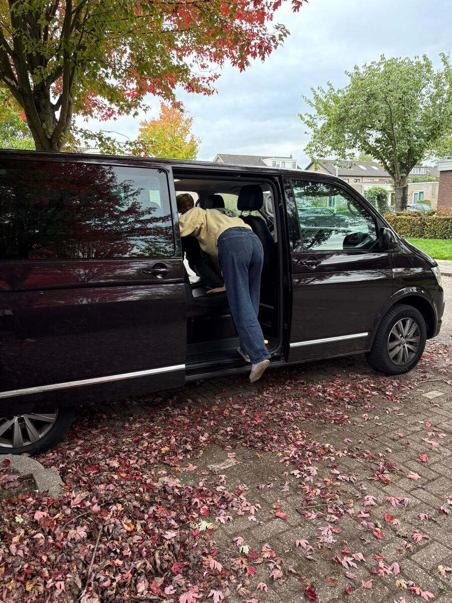
Koop dan.Daan:
Huren.Pascal:
Volgens mij kan je de passagiersstoelen ook naar elkaar toe draaien.
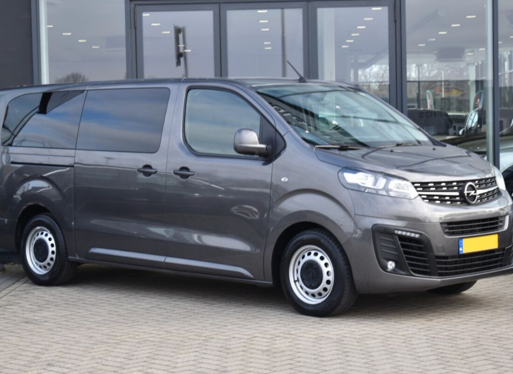
Zo'n bus huren die Daan had is ook wel een goed plan.Zijn kandidaat.
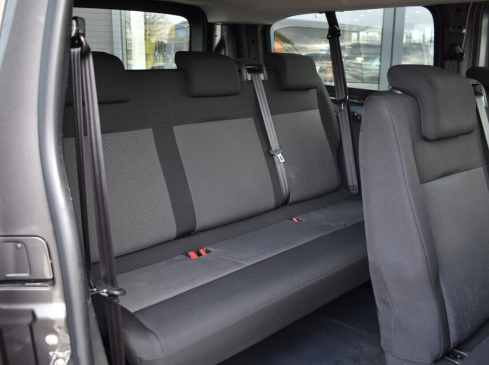
Lijkt me heerlijk ruim zitten.
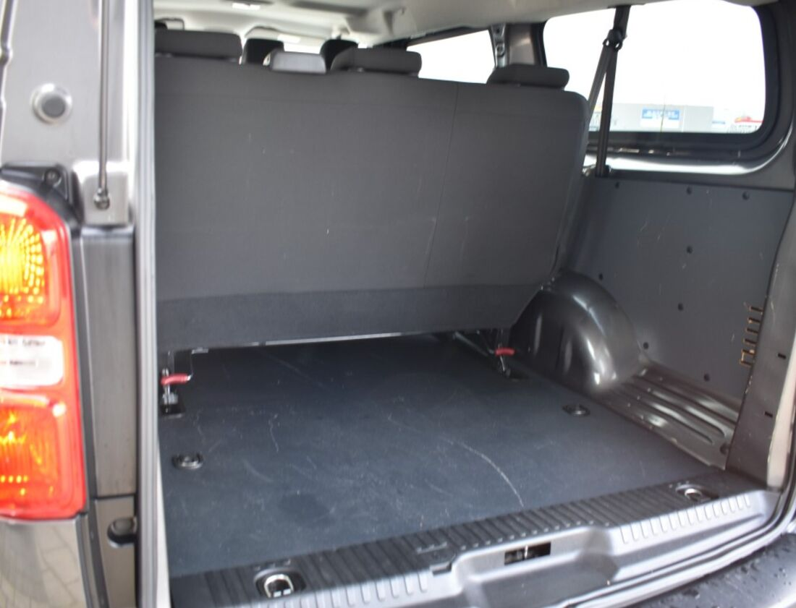
Kunnen we echt een kist met eten meenemen.
Het huisje
Op 11 juli geboekt door Pascal, nog voordat de groepsapp klaar was met stemmen. Danny: Don't ask for permission, ask for forgiveness.
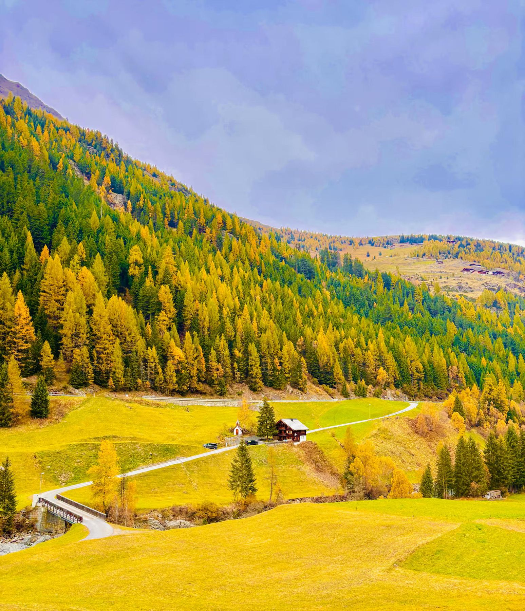
Weggestopt in een vuig huisje. In het duister. Dit is zo vet.
Chalet met sauna
Vier echte bedden (twee queensize, twee eenpersoons) plus twee grote banken op de verdieping: iedereen een bed, geen slaapbank-loterij zoals in Saalbach. Sauna erbij, iedere dag aan na het skiën
, aldus Daan.
De skibus stopt op 150 meter en brengt je naar de gondels. Pascal: Meestal wel gezellig op de terugweg, zingen in de bus in ski-gear.
Parkeren voor de deur, ook voor een busje. Het adres staat gepind in de groepsapp.
Abort.
Het alternatief: €2.167, skatepark voor de deur
Goedkoper en vlak bij de lift, maar te weinig bedden. Pascal: Wat mij betreft die cottage. Meer kamers en iedereen een bed.
Daan: Mega romantisch 🥰.
De buurman: Rotes Kreuz Ortsstelle Sölden
Zit om de hoek. Stijn: Heb jij daar zeker rekening mee gehouden, Pascal?
Pascal: Haha funny.
Het detectivewerk
Boeking, route en de vraag of het er eind juli nog stond. Uit de groepsapp, in volgorde.
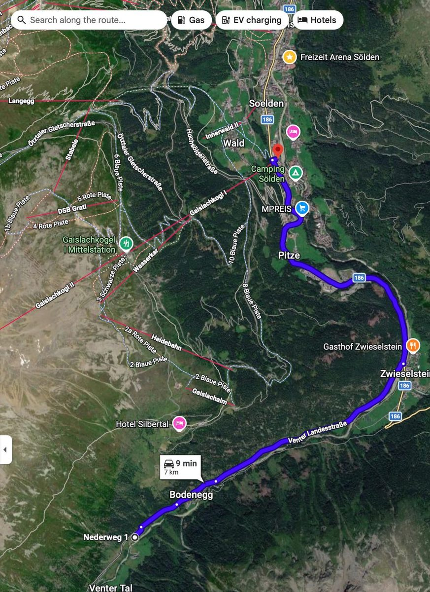
Skibus op 150 m toch?
Ja dat ook.
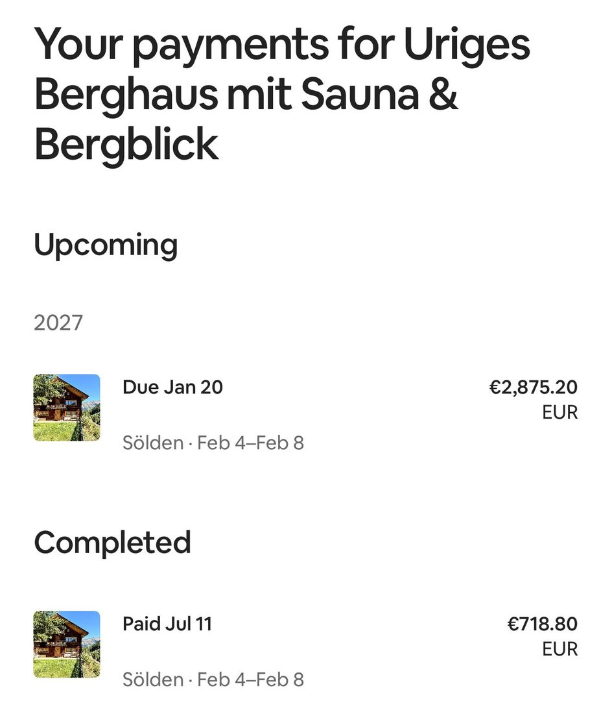
Wie moet ik wat betalen? Kan ik het weer vergeten.
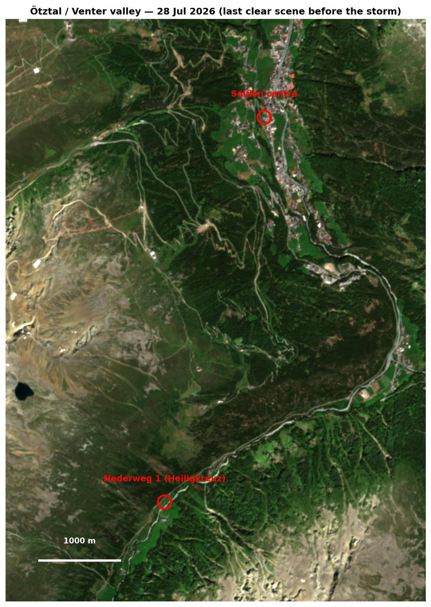
Staat ons huisje er nog?Pascal laat Claude satellietbeelden trekken: de laatste heldere opname, 28 juli.
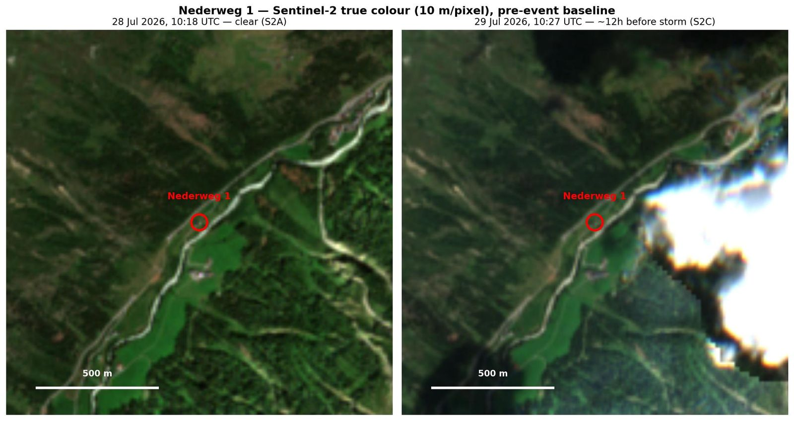
Nice work detective.
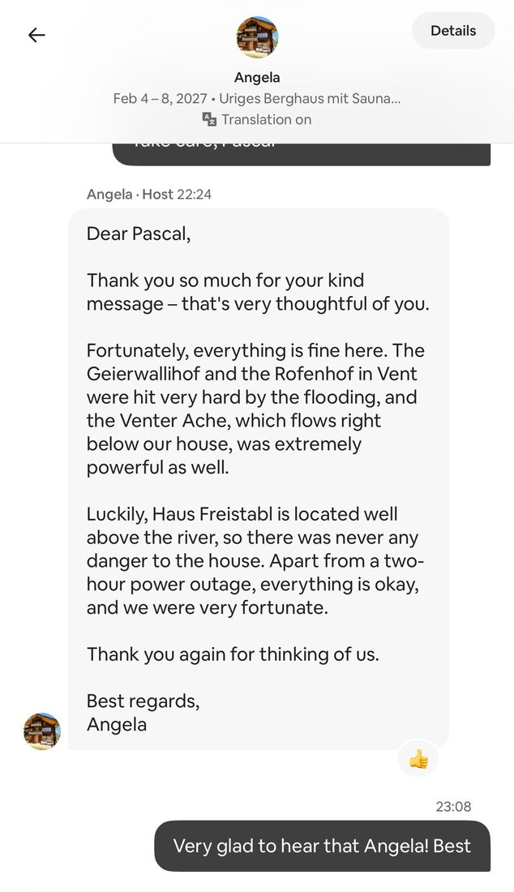
Het ontbijt-offensief
Want wie goed ontbijt, shredt harder.
Stijn is chef, dat stond na Saalbach al vast. Op 24 oktober stuurde hij zijn plan: vier ochtenden, elk anders. Zwaar op de skidagen, licht op de dag dat we 840 kilometer moeten rijden. Daan: Perfect.
En de lunch? Die regelt Stijn ook, maar dan wat makkelijker eetbaar, kunnen we door gassen
. Daan: Pohhhh de dream.
De boodschappenlijst
0 van 57 in de kar
Mee uit Nederland: de glutenvrije spullen, Zaanse mayo, bloedworst en forelkuit. De rest vers bij de Spar of Hofer in Sölden. Hoeveelheden zijn voor zes personen. Afvinken onthoudt alleen jouw eigen telefoon.
En op de berg
Wat de hutten serveren, uit Stijns beelden van Saalbach. Tik om af te spelen.
Bohh zin in worst en skiwasser nu.
Aardappel met spekjes en shit. Omnomnom.Daan:
Lekkkeeerrrr.
Haha ik kijk steeds alsof ik bijna sterf.Volgens Daan door
al die vette meuk. Maagzuur.
Die jägerbom gaat er goed in.Stijn:
Zin in bwoys.
Foto's bij de ontbijten via Wikimedia Commons, zoals in Stijns plan: Full English Breakfast, Andy Li (CC0); Lox and bagel, Kristina D.C. Hoeppner (CC BY-SA 2.0); Breakfast burrito, FASTILY (CC BY-SA 4.0); Yogurt, fruit, granola bowl, T.Tseng (CC BY 2.0). Ter illustratie; het echte ontbijt is beter.
Hoe het zover kwam
Van mosterd na de maaltijd
tot een geboekt huisje, een gevulde pot en een ontbijtplan.
- Tien dagen na Saalbach: "Wintersport 2027 planning"Stijn hernoemt de groep. Igor:
Qua sneeuwzekerheid is hoger beter.
Stijn:Ik wil gewoon een funpark.
- Data vast: donderdag 4 t/m maandag 8 februariDanny:
Ik heb Inge op de hoogte gebracht.
Pascal:Wel de dagen even checken haha.
- Het spaarplanDaan:
Automatische overboeking van 100,- pm? Dan is je vakantie gratis.
Twee weken later kocht Stijn een motor. - GebiedskeuzeIschgl, Kaprun en Serfaus passeren. Danny's filter:
Sölden of Gurgl dus.
Pascal:Sölden.
- Huisje geboektDaan:
Ik ben trots op je.
Danny:Vanaf oktober mag je dit van mij roepen.
- Huisje staat er nogNa noodweer in de Ötztal gecheckt bij de host.
- Deze pagina gaat liveDaan:
Haha dat eisenpakket.
Pascal:Dit was 1 prompt en een zip file.
- De pot gaat openDanny, Daan en Igor betalen dezelfde middag in één keer, Stijn termijn 1. Danny:
Ik durf niet te betalen omdat er 'test' staat.
- Het busjeDaan laat een VW Caravelle zien, €64 per dag.
- Skihal-poll en Saalbach-beeldenDinsdag 8 december wint. Stijn gaat de hype-edit maken.
- Termijn 2 en het ontbijtplanStijn:
Hoppa 2/4.
Twee minuten later:Hyper hyper, ik ga vast een ontbijtplan maken. Mag dat ook op de site?
Ja. - Skihal, voorstelSnowWorld Landgraaf, op een dinsdag.
- Point of no returnLaatste dag gratis annuleren. Daarna: skin in the game.
- Airbnb schrijft de rest af€2.875,20 van Pascals kaart.
- VertrekPilgrimage into the Abyss, deel twee.
De pot
Pascal schoot het huisje voor. Stijns vraag uit juli, Wie moet ik wat betalen?
, is beantwoord, en de meesten hebben het al gedaan.
Zo werkt het
- Kies hoe je betaalt: in één keer, in twee of in vier termijnen. De eerste betaling legt je keuze vast.
- Betaal via de knop. Bedrag en omschrijving staan klaar in bunq.me. Je hebt geen bunq nodig; elke Europese bankrekening werkt.
- Vier betaalmomenten, steeds de laatste werkdag van de maand: vr 30 okt, ma 30 nov, do 31 dec en vr 29 jan. Eerder betalen mag altijd.
- Pascal vinkt af wat binnenkomt. Een paar dagen voor elk betaalmoment komt er een herinnering in de groepsapp.
Zie je "Je verbinding is niet privé"?
Dat overkwam Danny op 7 oktober. Zet privé-DNS of je VPN even uit, of zet je wifi uit en open de link via 4G. Dan werkt hij gewoon.
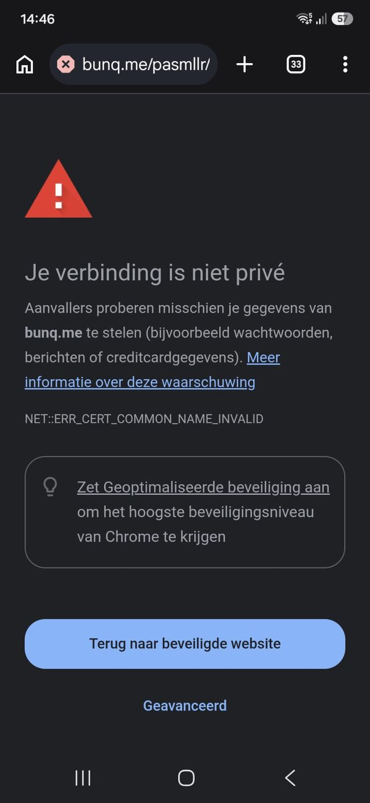
"Het zou moeten werken." Niets aan dit schreeuwt vertrouwen.
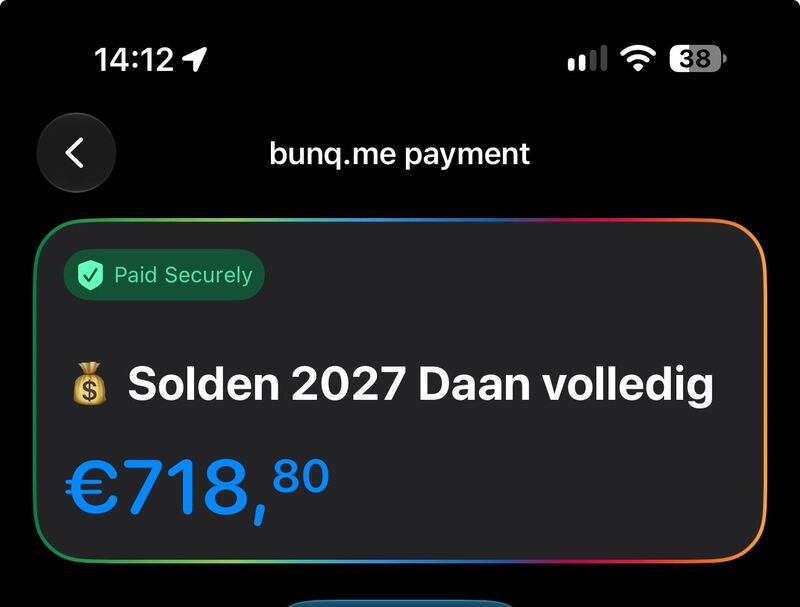
Ook voor het voorschieten 🙏Pascal:
Daan is minder digibeet denk ik.
Nog te regelen
Beneden in het dorp. Het grote werk is gedaan; dit is de rest, in volgorde van paniek.
- Busje boekenDe Caravelle van Daan (€64 per dag) of Stijns Opel. Iedereen is voor, nog niemand heeft geboekt.Wie? Daan?
- Skihal prikkenVoorstel: dinsdag 8 december, SnowWorld Landgraaf. Rijden: Danny en Stijn.8 dec, voorstel
- Pascal terugbetalenAlleen Stijn nog: termijn 3 en 4. Zie de pot.31 dec en 29 jan
- SkipassenDrie of vier dagen Ötztal, afhankelijk van het poedertje op maandag.Iedereen
- Materiaal hurenOnline, vooraf (les 4). Ski: Pascal. Board: Danny, Daan, Stijn. Igor: hybride.Iedereen
- Skipak voor StijnZichtbaar, en in een maat die past. Vinted heeft twee keer gefaald.Stijn
- BoodschappenDe lijst staat klaar. Glutenvrije spullen, Zaanse mayo, bloedworst en forelkuit gaan mee uit Nederland.Stijn, chef
- Terugreis kiezenMaandag nog een poedertje pakken, of inpakken en wegwezen?Groepsapp
- SlaapindelingSnurkers in de woonkamer. Wie dat zijn is bekend.Ter plekke
- Hype-editSaalbach-beelden tot een hype-video. Onder werktijd.Stijn
- OntbijtplanStijn, 24 oktober. Vier ochtenden, acht pagina's.24 okt
- Huisje boekenPascal, 11 juli. Aanbetaald; de rest gaat 20 januari van de kaart.11 jul
- Gebied kiezenIschgl, Kaprun, Serfaus, en toen Sölden.9 jul
- Data prikkenDo 4 t/m ma 8 februari 2027.21 mrt
Het spaarplan, in beeld
Daan zet €100 per maand automatisch opzij. Danny €400 plus 1,4% rente die compoundt. Stijn:
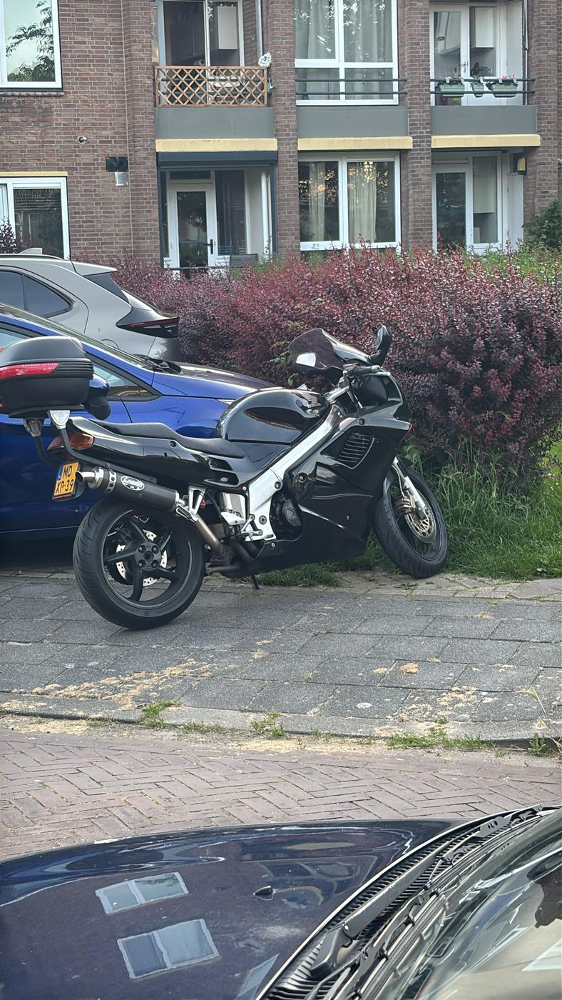
Ik heb goed nieuws en slecht nieuws.Een Honda VFR 750,
ding rijdt in de 2 al naar de 80.
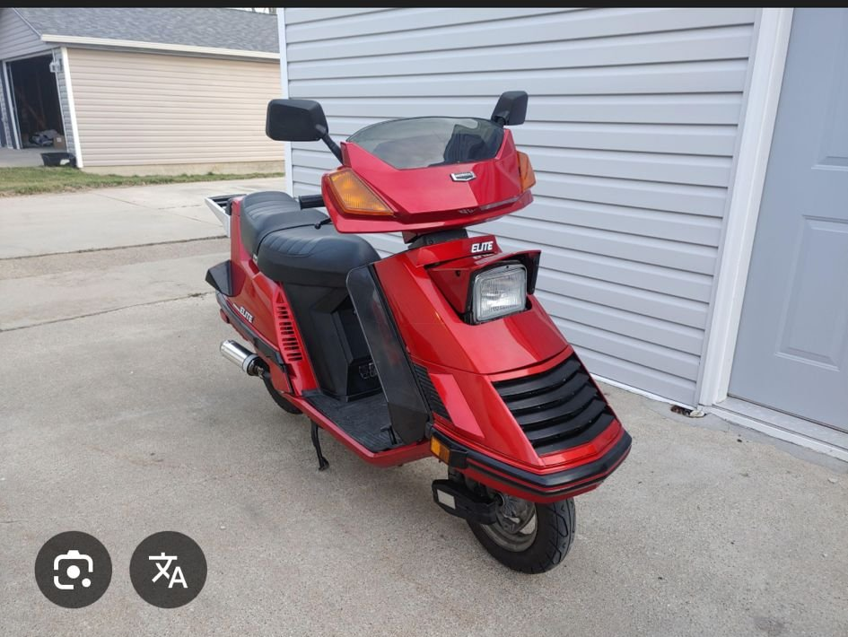
Wat is er met deze gebeurd?Daan:
Pohhhh. Dik.